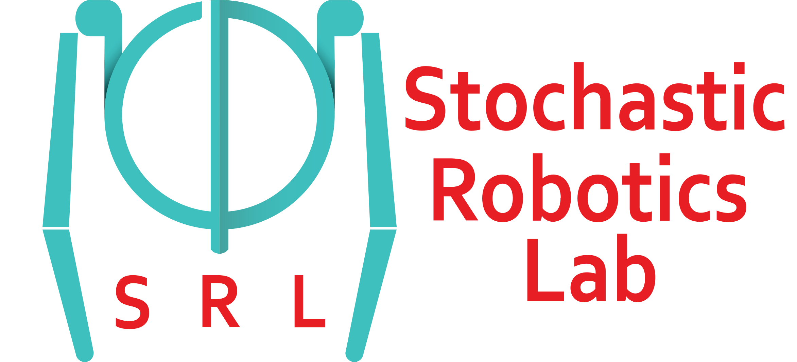
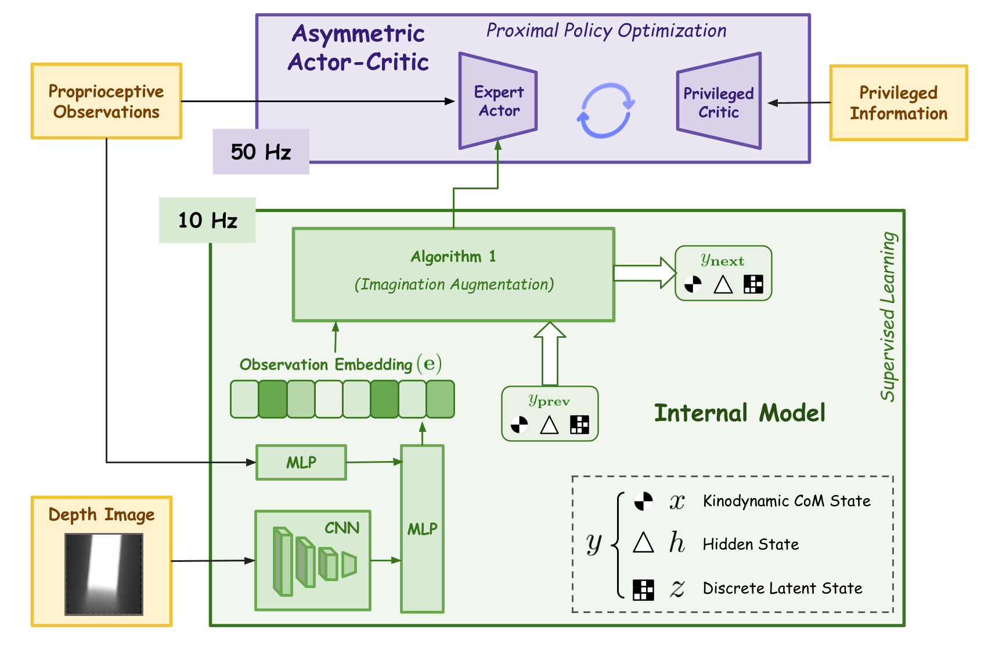
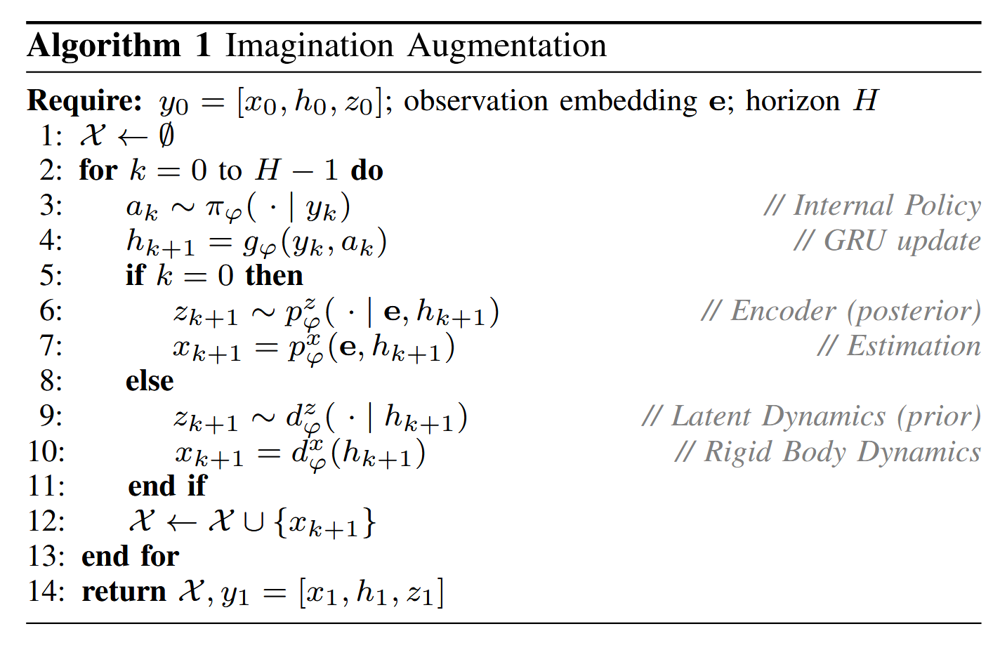
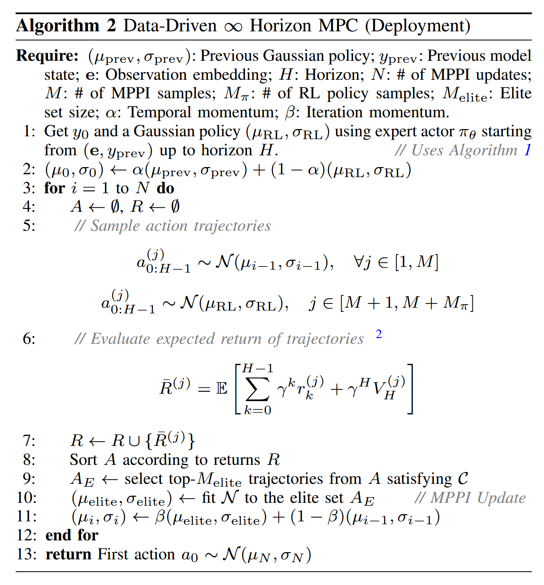
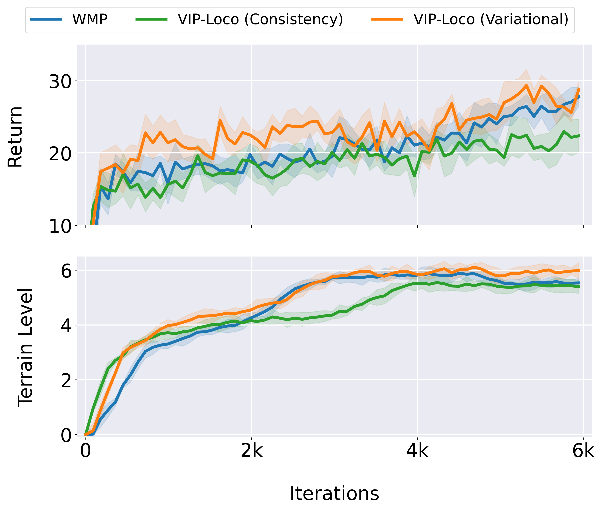
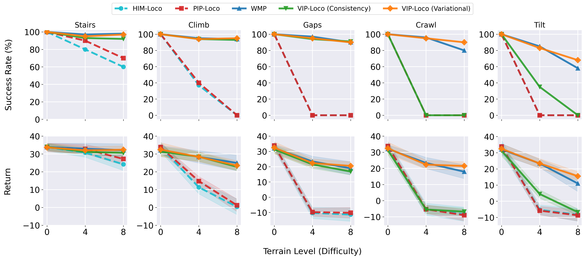
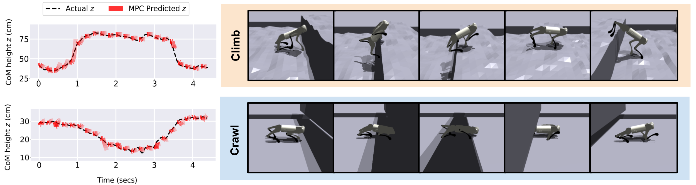
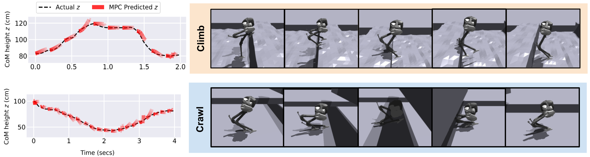
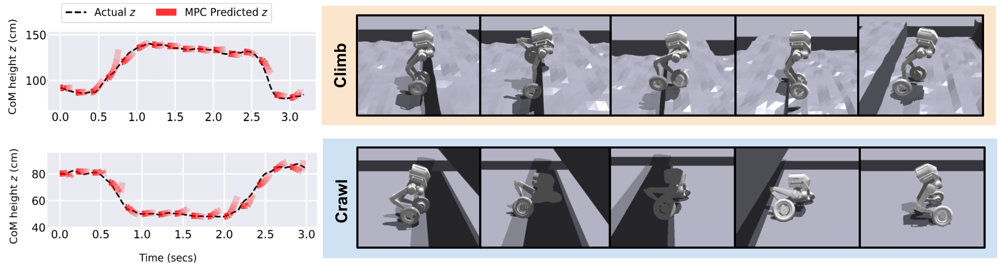

Perceptive locomotion for legged robots requires anticipating and adapting to complex, dynamic environments. Model Predictive Control (MPC) provides interpretable motion planning with constraint enforcement, but struggles with high-dimensional perceptual inputs and rapidly changing terrain. In contrast, model-free Reinforcement Learning (RL) adapts well across visually challenging scenarios but lacks planning.
To bridge this gap, we propose VIP-Loco, a framework that integrates vision-based scene understanding with RL and planning. During training, an internal model maps proprioceptive states and depth images into compact kinodynamic features used by the RL policy. At deployment, the learned models are used within an infinite-horizon MPC formulation, combining adaptability with structured planning.
We validate VIP-Loco in simulation on challenging locomotion tasks — including slopes, stairs, crawling, tilting, gap jumping, and climbing — across three robot morphologies: a quadruped (Unitree Go1), a biped (Cassie), and a wheeled-biped (TronA1-W). Through ablations and comparisons with state-of-the-art methods, we show that VIP-Loco unifies planning and perception, enabling robust, interpretable locomotion in diverse environments.

VIP-Loco training framework. The internal model (GRU + CNN-MLP depth encoder + variational latent state) is trained via supervised learning alongside an asymmetric actor-critic (PPO). The Expert Actor receives imagined kinodynamic rollouts and the GRU hidden state via stop-gradient.
The internal model serves a dual role. During training, it provides the expert actor with imagined kinodynamic rollouts that encode future terrain geometry, enabling anticipatory behavior without privileged simulator access. During deployment, it acts as the dynamics and reward oracle for the MPC planner (Algorithm 2), enabling constraint-aware trajectory optimization in a compact learned state space.
The GRU operates at 10 Hz — rather than the actor's 50 Hz — due to the computational cost of depth-image encoding and latent-state estimation. The recurrent hidden state is held fixed between GRU updates and reused by the actor at the higher control frequency.
We adopt a variational latent objective rather than a consistency-based one (as in TD-MPC). The privileged critic's scan-dot inputs capture height information for open terrains but cannot represent lateral geometry constraints such as wall clearances. The variational objective instead produces representations better suited to visually demanding tasks such as crawl and tilt.


Left (Alg. 1): Imagination Augmentation rolls out future kinodynamic CoM states in latent space using the internal model. Right (Alg. 2): Data-driven ∞-horizon MPC (MPPI) optimizes action trajectories at deployment using the RL policy as a warm-start, with value bootstrapping for infinite-horizon return.
We compare three visually-guided methods during training on the Go1 quadruped over 6000 iterations, tracking average episodic return (top) and mastered terrain level (bottom), averaged over 5 seeds.

VIP-Loco (Variational) achieves the highest and most stable returns, steadily mastering harder terrains (levels ≥6). WMP performs competitively but asymptotically regresses to easier terrains to maintain higher reward. VIP-Loco (Consistency) converges earlier and stagnates at lower levels, highlighting the benefit of the variational objective for visually demanding tasks such as crawl and tilt, where the privileged critic's scan-dot inputs provide an insufficient terrain description.
We compare five methods across terrain types of increasing difficulty (0 = easiest, 8 = hardest). HIM-Loco and PIP-Loco represent [RL + MPC] without vision; WMP represents [RL + Vision] without planning; VIP-Loco (Variational) is our full method.

Success rate (top) and average return (bottom) across five terrain types for the Go1 quadruped, over 5 seeds. VIP-Loco (Variational) maintains >90% success on stairs at maximum difficulty and sustains >60% on crawl and tilt where proprioceptive-only methods fail entirely.
Average episodic return after 5k iterations (5 seeds). Planning gains are concentrated at high difficulty levels (5-8) where baseline methods saturate or fail. TronA1-W shows the largest and most consistent gains (+2.33 avg. return) due to additional non-holonomic constraints.
| Robot | Method | Slopes | Stairs | Climb | Gaps | Crawl | Tilt |
|---|---|---|---|---|---|---|---|
| Go1 Quadruped |
w/o Planning | 28.37 | 26.66 | 22.80 | 24.80 | 20.80 | 16.18 |
| VIP-Loco | 27.22 | 27.85 | 23.26 | 26.33 | 22.63 | 18.78 | |
| Cassie Biped |
w/o Planning | 22.54 | 23.66 | 21.46 | 21.34 | 18.52 | 12.33 |
| VIP-Loco | 23.19 | 23.85 | 27.42 | 20.50 | 17.69 | 14.40 | |
| TronA1-W Wheeled Biped |
w/o Planning | 33.47 | 31.32 | 29.39 | 31.19 | 27.55 | 21.82 |
| VIP-Loco | 38.29 | 34.05 | 32.87 | 30.22 | 29.27 | 24.03 |
Bold = best per terrain per robot. Averaged over 5 seeds, 5k iterations.
MPC-predicted CoM height (red) vs. actual tracked profiles (black) for Climb and Crawl tasks across all three morphologies. Close alignment confirms that VIP-Loco's learned dynamics model provides accurate predictions for receding-horizon planning.



Predicted vs. actual CoM height for (a) Go1, (b) Cassie, and (c) TronA1-W on Climb and Crawl.
@article{viploco2025,
title = {VIP-Loco: A Visually Guided Infinite Horizon Planning
Framework for Legged Locomotion},
author = {Aditya Shirwatkar and Satyam Gupta and Shishir Kolathaya},
journal = {Under Review},
year = {2025}
}